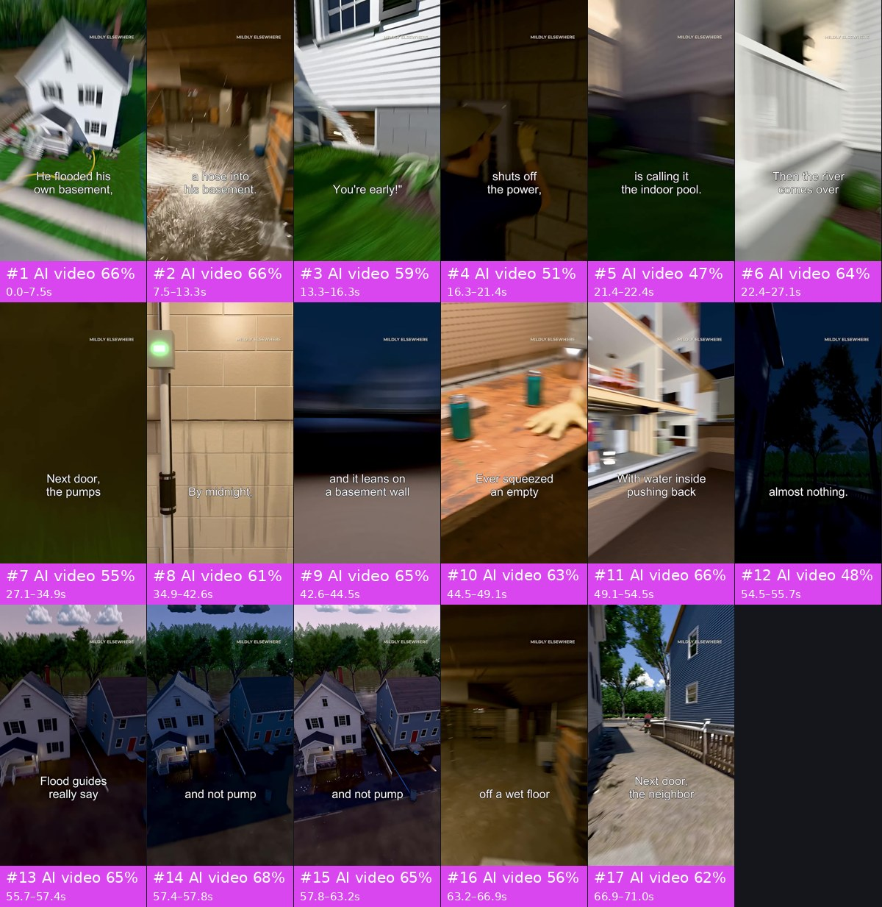
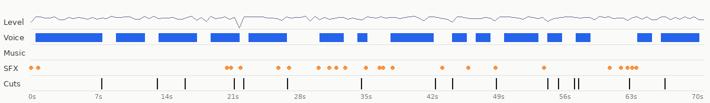

How this video was made
A counter-intuitive flood story: the man who floods his own basement on purpose ends up with intact walls, while the neighbour who pumps his dry has his basement wall collapse.
Mixed production: live action or AI, to confirm 93% + AI-generated video 7%
- Confidence 61%, based on: tool measurements + AI assistant reviewed 17 shots
- ⚠️ 17 points are uncertain, see “Open questions”

Breakdown: how this video is built
What makes it work
- The hook: 0-3 s: 'He flooded his own basement the day before the river could' — an absurd-sounding action that demands an explanation.
- Fool-vs-smart-neighbour structure with a reversal: the mocker loses ('How's the pool?' → kitchen in the basement)
- Physics made visible with cross-section cutaways (soil pressure, a bowing wall)
- Everyday analogies: a parked truck leaning on the wall; empty vs full soda can
- Relentless FPV fly-through camera with whip-blur transitions: no static frame in 71 s
Production pipeline at a glance
| Stage | What this video uses | Remake approach |
|---|---|---|
| Base picture | AI-generated video 17 shots (100%) | AI in 10 generations |
| Packaging | 64 subtitle lines (bottom/middle/top, up to 2 rows): white text, black outline, keywords highlighted in green, line height 5.6%; entrance: hard in×23, fade in×10, slide in×1; keywords change colour as they are spoken; text label ×2: "the indoor poo", "comes over"; SFX hits on: subtitle in ×10; Placed by spoken line ×1 (with new wording they follow the line, not the old second): text label "the indoor poo" → 0.0s into "is calling it the ", on "theindoorpool" | export packaging/subtitles.srt for timeline alignment |
| Sound | voice（TTS voice-over）, 6 distinct effects (15 hits) | voice: TTS voice-over; effects: add from a library at the listed times |
Content and structure
Narrative line
Keep this line in a remake: same order, same job at each step, with the point refilled from your own cases, numbers and material, so it is more than a change of subject.
| Time | Shots | Job | What it says |
|---|---|---|---|
| 0.0–7.5s | #1 | grab attention | He floods his own basement the day before the river does |
| 7.5–13.3s | #2 | — | Neighbour mocks him; three pumps going |
| 13.3–16.3s | #3 | — | He moves valuables up and kills the power |
| 16.3–21.4s | #4 | — | 'The indoor pool' |
| 21.4–22.4s | #5 | — | Transition |
| 22.4–42.6s | #6–#8 | turn | The river arrives; both houses flooded → Neighbour gloats, then a hairline crack → The wall is bending in |
| 42.6–44.5s | #9 | — | Soaked soil pushes like a parked truck |
| 44.5–49.1s | #10 | — | Analogy: full can resists crushing |
| 49.1–54.5s | #11 | — | Water inside balances the pressure |
| 54.5–55.7s | #12 | — | Authority beat |
| 55.7–57.4s | #13 | — | Let the water in, don't pump until the river drops |
| 57.4–57.8s | #14 | — | Transition |
| 57.8–71.0s | #15–#17 | deliver the conclusion | He drains it slowly once the river drops → His walls survived → Twist: the neighbour's kitchen fell into his basement |
Script (local speech recognition, unchecked; trust on-screen subtitles for names and homophones)
all 20 lines
| Time | Who | Line | Delivery |
|---|---|---|---|
| 0.2–3.2s | narration | He flooded his own basement the day before the river could. | measured: rate fast (3.6 words/s), wide pitch movement, higher than this speaker's other lines |
| 3.6–7.7s | narration | The whole street is stacking sandbags and he's running a hose into his basement. | measured: rate fast (3.4 words/s), wide pitch movement |
| 8.2–13.3s | narration | His neighbor has three pumps going and yells over flood's not till tomorrow, pal, you're early. | measured: rate normal (3.1 words/s), wide pitch movement, higher than this speaker's other lines, louder than the other lines |
| 13.8–18.1s | narration | But he carries the couch upstairs, shuts off the power, and fills it to the top step. | measured: rate fast (3.9 words/s), wide pitch movement |
| 18.7–21.8s | narration | By dinner, the whole street is calling it the indoor pool. | measured: rate fast (3.6 words/s), 0.6s pause before |
| 22.2–26.3s | narration | Then the river comes over the bank and both houses end up in a brown lake. | measured: rate fast (3.9 words/s), lower than this speaker's other lines |
| 26.7–30.4s | narration | Next door, the pumps are winning and the neighbor yells,How's the pool?? | measured: rate fast (3.5 words/s), wide pitch movement, louder than the other lines |
| 30.7–33.2s | narration | But by sunset, there's a crack in the neighbor's wall. | measured: rate fast (3.9 words/s) |
| 33.5–34.5s | narration | Thin as a hair. | measured: rate fast (4.3 words/s) |
| 35.0–38.8s | narration | By midnight, it's wide enough for a finger and the wall is bending in. | measured: rate fast (3.7 words/s), lower than this speaker's other lines |
| 39.2–44.0s | narration | You see, soaked dirt is heavy and it leans on a basement wall like a parked truck. | measured: rate fast (3.6 words/s), wide pitch movement |
| 44.5–46.0s | narration | Ever squeezed an empty soda can. | measured: rate fast (3.9 words/s), higher than this speaker's other lines |
| 46.3–48.7s | narration | It crumples a full one won't give. | measured: rate normal (3.0 words/s), wide pitch movement |
| 49.2–54.3s | narration | With water inside pushing back just as hard, the indoor pool's walls feel almost nothing. | measured: rate normal (3.0 words/s), wide pitch movement |
| 54.9–59.3s | narration | Flood guides really say to let the water in and not pump until the river drops. | measured: rate fast (3.6 words/s), wide pitch movement, 0.6s pause before |
| 59.8–61.6s | narration | A week later, he drains his pool. | measured: rate fast (3.9 words/s), wide pitch movement |
| 61.9–63.0s | narration | Nice and slow. | measured: rate normal (2.9 words/s), flatter than the other lines |
| 63.2–65.7s | narration | Off a wet floor and four straight walls. | measured: rate normal (3.3 words/s), flatter than the other lines, lower than this speaker's other lines |
| 66.1–68.5s | narration | Next door, the neighbor is pumping his out too. | measured: rate fast (3.8 words/s) |
| 68.8–70.6s | narration | Except his kitchen is down there with it. | measured: rate fast (4.4 words/s), flatter than the other lines, lower than this speaker's other lines |
Shot list
| # | Frame | Time | What it says | Picture | Camera |
|---|---|---|---|---|---|
| 1 |  | 0:00.0 · 7.5s | grab attention: He floods his own basement the day before th… | Hook: FPV fly-in to the white house; the hero runs a yellow … | smooth move |
| 2 |  | 0:07.5 · 5.8s | Neighbour mocks him; three pumps going | Fast fly-by to the blue neighbour's house: blue discharge ho… | smooth move |
| 3 |  | 0:13.3 · 3.0s | He moves valuables up and kills the power | Whip into the flooding basement; the hero carries a couch up… | handheld shake |
| 4 |  | 0:16.3 · 5.2s | 'The indoor pool' | POV down the basement stairs: the water is up to the top ste… | static (subject moves) |
| 5 |  | 0:21.4 · 1.0s | Transition | Night exterior through a window; transition beat. Style: Sem… | static |
| 6 |  | 0:22.4 · 4.6s | turn: The river arrives; both houses flooded | River overtops the bank and sandbags; aerial of both houses … | smooth move |
| 7 |  | 0:27.1 · 7.8s | turn: Neighbour gloats, then a hairline crack | Cutaway of the neighbour's dry basement with pumps winning; … | smooth move |
| 8 |  | 0:34.9 · 7.8s | turn: The wall is bending in | Midnight: the crack widens to finger width (flashlight close… | smooth move |
| 9 |  | 0:42.6 · 1.8s | Soaked soil pushes like a parked truck | Cutaway metaphor: a red pickup truck leaning against the bas… | smooth move |
| 10 |  | 0:44.5 · 4.6s | Analogy: full can resists crushing | Workbench close-up: a gloved hand squeezes an empty soda can… | smooth move |
| 11 |  | 0:49.1 · 5.4s | Water inside balances the pressure | Side-by-side cutaway: the flooded basement walls with water … | smooth move |
| 12 |  | 0:54.5 · 1.1s | Authority beat | Quick graphic/insert beat for 'flood guides really say'. Sty… | static (subject moves) |
| 13 |  | 0:55.7 · 1.7s | Let the water in, don't pump until the river drops | Aerial of the flooded street. Style: Semi-realistic '3D-rend… | smooth move |
| 14 |  | 0:57.4 · 0.4s | Transition | Brief zoom/pan frame. Style: Semi-realistic '3D-render' look… | whole-frame zoom / pan |
| 15 |  | 0:57.8 · 5.4s | deliver the conclusion: He drains it slowly once the river d… | Aerial as the river recedes, leaving muddy yards; a week lat… | smooth move |
| 16 |  | 1:03.2 · 3.7s | deliver the conclusion: His walls survived | Inside the hero's basement: empty, wet floor, four straight … | smooth move |
| 17 |  | 1:06.9 · 4.2s | deliver the conclusion: Twist: the neighbour's kitchen fell … | Neighbour in rubber boots pumping his basement out, kitchen … | smooth move |
Cast, scenes and props
- Visual style: Semi-realistic '3D-render' look (game-engine/archviz style: clean geometry, soft GI lighting, plastic-ish skin), American suburban street with a white clapboard house (the hero's) and a blue house (th
| Id | Name | Kind | Look | Role | Voice | Shots |
|---|---|---|---|---|---|---|
| A | Hero | other | blue/grey T-shirt, khaki shorts or trousers, short hair; later navy shirt | floods his own basement | — | #1, #3, #4, #15, #16 |
| B | Neighbour | other | dark hair, maroon T-shirt, grey shorts, later rubber boots | pumps his basement, mocks the hero | — | #2, #7, #8, #17 |
- Character consistency: Hero, Neighbour appear across multiple shots; lock an anchor image first and feed it as reference in later shots
Scenes
| Scene | Where | When | Set / light | Shots |
|---|---|---|---|---|
| S1 | suburban street by a river: white clapboard house and blue house, lawns, picket | day → sunset → night → a week later | bright daylight, then night | #1, #2, #5, #6, #13–#15 |
| S2 | basements (cutaways, stairs, breaker panel, workbench) | — | warm interior light | #3, #4, #7–#12, #16, #17 |
Props / products / logos
- yellow hose / green hose (shots #1, #15)
- blue pump discharge hoses (shots #2)
- sandbags (shots #1, #6)
- life ring (shots #4)
- red pickup truck (metaphor) (shots #9)
- teal soda cans (shots #10)
Packaging layer (subtitles / styled text / stickers / sound-effect hits)
- 64 subtitle lines (bottom/middle/top, up to 2 rows): white text, black outline, keywords highlighted in green, line height 5.6%; entrance: hard in×23, fade in×10, slide in×1; keywords change colour as they are spoken
- text label ×2: "the indoor poo", "comes over"
- SFX hits on: subtitle in ×10
- Placed by spoken line ×1 (with new wording they follow the line, not the old second): text label "the indoor poo" → 0.0s into "is calling it the ", on "theindoorpool"
text timeline (66 rows)
| Time | Kind | Text | Style | In / out | SFX |
|---|---|---|---|---|---|
| 0.00–1.60s | subtitle | MILDLY ELSEWHERE | white text, keywords highlighted in grey, line height 1.9% (about 37px) | fade out | ding |
| 0.00–1.60s | subtitle | He flooded his ⏎ own basement, | white text, black outline, keywords highlighted in green, line height 5.3% (about 103px) | hard out | — |
| 1.90–3.10s | subtitle | the day before ⏎ the river could. | white text, black outline, keywords highlighted in green, line height 5.6% (about 107px) | hard in / fade out | — |
| 2.00–2.10s | subtitle | MIEE | white text, keywords highlighted in grey, line height 1.9% (about 37px) | hard in / hard out | — |
| 2.30–10.40s | subtitle | MILDLY ELSEWHERE | white text, line height 1.9% (about 37px) | hard in / hard out (bounces / changes colour midway) | — |
| 3.50–4.90s | subtitle | The whole street ⏎ is stacking | white text, black outline, keywords highlighted in green, line height 6.0% (about 115px) | fade in | — |
| 4.90–6.10s | subtitle | sandbags, ⏎ and he's running | white text, black outline, keywords highlighted in green, line height 6.1% (about 117px) | hard out | — |
| 6.30–7.60s | subtitle | a hose into ⏎ his basement. | white text, black outline, keywords highlighted in green, line height 5.1% (about 98px) | hard out | — |
| 8.00–9.30s | subtitle | His neighbor ⏎ has three pumps | white text, black outline, line height 6.0% (about 115px) | fade in / hard out | — |
| 9.50–10.60s | subtitle | going ⏎ and yells over, | white text, black outline, line height 5.9% (about 114px) | fade in / fade out (bounces / changes colour midway) | — |
| 10.50–12.50s | subtitle | SEWHERE | white text, line height 1.9% (about 37px) | fade in / hard out | — |
| 10.90–12.20s | subtitle | "Flood's not till ⏎ tomorrow, pal. | white text, black outline, keywords highlighted in green, line height 5.3% (about 103px) | fade in / hard out | — |
| 12.50–13.50s | subtitle | You're early!" | white text, black outline, black box, line height 6.2% (about 120px) | hard out (bounces / changes colour midway) | — |
| 13.50–14.10s | subtitle | But he ⏎ carries the couch | white text, black outline, line height 5.1% (about 98px) | fade out | — |
| 14.50–15.40s | subtitle | upstairs, | white text, black outline, keywords highlighted in brown, line height 6.0% (about 115px) | hard out | — |
| 15.50–16.50s | subtitle | shuts off ⏎ the power, | white text, black outline, keywords highlighted in orange, line height 5.8% (about 111px) | hard in / slide out | — |
| 16.50–18.50s | subtitle | and fills it to ⏎ the top step. | white text, black outline, line height 5.6% (about 108px) | hard out | — |
| 18.50–19.70s | subtitle | By dinner, ⏎ the whole street | white text, black outline, line height 5.3% (about 103px) | hard in / slide out | — |
| 20.00–21.60s | subtitle | is calling it ⏎ the indoor pool. | white text, black outline, keywords highlighted in brown, line height 5.9% (about 114px) | shrink out | — |
| 20.00–21.20s | text label | the indoor pool. | white text, black outline, keywords highlighted in white, line height 5.8% (about 112px) | hard out | — |
| 22.00–23.00s | subtitle | Then the river | white text, black outline, line height 5.3% (about 101px) | — | pop |
| 22.00–22.80s | text label | comes over | white text, black outline, line height 4.0% (about 76px) | hard out | — |
| 23.00–23.80s | subtitle | the bank, | white text, black outline, keywords highlighted in green, line height 5.7% (about 109px) | — | — |
| 23.80–24.10s | subtitle | and both houses | white text, black outline, line height 5.1% (about 98px) | hard in / hard out | — |
| 23.90–24.10s | subtitle | end up | white text, black outline, line height 6.5% (about 124px) | hard in / hard out | — |
| 24.50–24.60s | subtitle | and both houses ⏎ end up | white text, black outline, keywords highlighted in green, line height 5.7% (about 110px) | hard in / hard out | — |
| 25.00–26.50s | subtitle | in a brown lake. | white text, black outline, line height 4.8% (about 93px) | hard out | — |
| 26.50–27.50s | subtitle | Next door, ⏎ the pumps | white text, black outline, line height 5.8% (about 111px) | hard in / slide out | — |
| 27.50–28.10s | subtitle | are winning, ⏎ and the neighbor | white text, black outline, line height 5.7% (about 110px) | slide out | — |
| 28.50–28.60s | subtitle | yells, | white text, black outline, line height 5.8% (about 111px) | hard in / hard out | — |
| 28.50–30.50s | subtitle | yells, ⏎ "How's the pool?" | white text, black outline, line height 6.0% (about 116px) | hard out | — |
| 30.50–31.50s | subtitle | But by sunset, | white text, black outline, brown box, line height 6.6% (about 126px) | hard out | pop |
| 31.50–32.80s | subtitle | there's a crack ⏎ in the neighbor's | white text, black outline, line height 5.4% (about 103px) | hard out | pop |
| 33.00–33.10s | subtitle | wall, | white text, black outline, line height 5.5% (about 107px) | hard in / hard out | — |
| 33.30–34.90s | subtitle | thin as a hair. | white text, black outline, line height 5.2% (about 100px) | hard in / hard out | pop |
| 34.90–35.10s | subtitle | By midnight, | white text, black outline, line height 6.2% (about 118px) | hard out | — |
| 35.50–37.30s | subtitle | it's wide enough ⏎ for a finger, | white text, black outline, line height 6.2% (about 118px) | hard out | ding |
| 37.30–38.60s | subtitle | and the wall | white text, black outline, line height 4.9% (about 94px) | fade out | click |
| 38.00–38.60s | subtitle | is bending in. | white text, black outline, line height 6.4% (about 122px) | fade in / hard out | click |
| 39.00–40.10s | subtitle | You see, ⏎ soaked dirt | white text, black outline, line height 5.5% (about 107px) | hard out | — |
| 40.50–41.30s | subtitle | is heavy, | white text, black outline, keywords highlighted in grey, line height 6.2% (about 118px) | hard in / fade out | — |
| 41.40–42.60s | subtitle | and it leans on ⏎ a basement wall | white text, black outline, line height 5.1% (about 98px) | hard out | — |
| 42.80–44.50s | subtitle | like a parked ⏎ truck. | white text, black outline, line height 5.4% (about 104px) | hard in / hard out | — |
| 44.50–45.30s | subtitle | Ever squeezed ⏎ an empty | white text, black outline, keywords highlighted in orange, line height 5.7% (about 109px) | hard in / hard out | — |
| 45.50–46.40s | subtitle | soda can? | white text, black outline, keywords highlighted in orange, line height 6.0% (about 115px) | fade in | — |
| 46.40–47.30s | subtitle | It crumples. | white text, black outline, keywords highlighted in orange, line height 6.0% (about 115px) | fade in | — |
| 47.30–48.70s | subtitle | A full one ⏎ won't give. | white text, black outline, keywords highlighted in orange, line height 5.9% (about 113px) | hard in | — |
| 49.00–50.10s | subtitle | With water inside | white text, black outline, line height 4.8% (about 93px) | hard in / fade out | — |
| 49.50–50.10s | subtitle | pushing back | white text, black outline, line height 6.1% (about 117px) | fade in / hard out | — |
| 50.50–51.60s | subtitle | just as hard, | white text, black outline, line height 5.6% (about 108px) | fade out | — |
| 51.80–52.60s | subtitle | the indoor pool's ⏎ walls feel | white text, black outline, line height 5.6% (about 108px) | hard in / hard out | — |
| 53.00–54.80s | subtitle | almost nothing. | white text, black outline, line height 6.4% (about 124px) | hard out | — |
| 54.80–55.90s | subtitle | Flood guides ⏎ really say | white text, black outline, line height 6.2% (about 120px) | hard in / slide out | — |
| 56.00–56.80s | subtitle | to let the water in | white text, black outline, line height 5.0% (about 95px) | slide out | — |
| 57.00–57.70s | subtitle | and not pump | white text, black outline, line height 5.7% (about 109px) | hard out | — |
| 58.00–59.10s | subtitle | until the ⏎ river drops. | white text, black outline, line height 5.2% (about 100px) | hard in / hard out | — |
| 59.00–59.10s | subtitle | river drops. | white text, black outline, line height 5.5% (about 107px) | hard in / hard out | — |
| 59.50–60.10s | subtitle | A week later, | white text, black outline, line height 5.5% (about 107px) | hard out | — |
| 60.50–61.60s | subtitle | he drains ⏎ his pool, | white text, black outline, line height 5.9% (about 113px) | fade in / hard out | — |
| 62.00–62.60s | subtitle | nice and slow, | white text, black outline, line height 5.7% (about 110px) | slide in / fade out | — |
| 63.00–63.90s | subtitle | off a wet floor | white text, black outline, keywords highlighted in brown, line height 5.3% (about 101px) | hard out | click |
| 63.90–66.00s | subtitle | and four ⏎ straight walls. | white text, black outline, keywords highlighted in brown, line height 5.5% (about 105px) | hard in / hard out | click |
| 66.00–66.80s | subtitle | Next door, ⏎ the neighbor | white text, black outline, keywords highlighted in brown, line height 5.8% (about 112px) | hard in / slide out | — |
| 67.00–68.10s | subtitle | is pumping ⏎ his out too, | white text, black outline, line height 5.8% (about 111px) | hard out | — |
| 68.50–69.50s | subtitle | except ⏎ his kitchen | white text, black outline, line height 5.2% (about 100px) | slide out | — |
| 69.50–71.10s | subtitle | is down there ⏎ with it. | white text, black outline, line height 5.3% (about 102px) | — | — |
| Time | Layer | Spoken line |
|---|---|---|
| 20.00s | text label "the indoor poo" | 0.0s into "is calling it the ", on "theindoorpool" |
- Remake: import
packaging/subtitles.srtinto your editor and replace the words; styled version inpackaging/overlays.ass
Sound
Voice
- male-leaning
- Source: TTS voice-over
- Remake: TTS voice-over: CapCut text-to-speech or another TTS tool, with a similar voice and pace
Sound effects (15 hits, 6 distinct sounds)
| Sound | Listen | Type | Times used | At | On screen |
|---|---|---|---|---|---|
| F1 | ding | 7 | 0.1s, 0.8s, 30.4s, 31.5s, 33.2s, 35.3s, 43.4s | subtitle "MILDLY ELSEWHERE" appears; subtitle "But by sunset," appears; subtitle "there's a crack " appears | |
| F2 | pop | 1 | 22.1s | subtitle "Then the river" appears | |
| F3 | click | 3 | 32.2s, 36.8s, 37.2s | subtitle "and the wall" appears | |
| F4 | click | 1 | 38.1s | subtitle "is bending in." appears | |
| F5 | click | 1 | 63.0s | subtitle "off a wet floor" appears | |
| F6 | click | 2 | 63.4s, 63.9s | subtitle "and four straigh" appears |
- Remake: play each sound, find a similar one in your editor's library and place it at the times under “At”
Listen to the tracks
Sound measurements and evidence

- Loudness -17.2 dBFS, peak -0.8 dBFS
- sound runs across cuts, laid in post as one bed (background changes 5.5dB at cuts vs 3.7dB within shots)
- Voice on 62% of the duration, pitch about 141.3Hz
- Voice source: TTS voice-over (TTS voice-over 64%, human recording 27%, native dialogue from the AI video model 9%)
- Voice and background sound run across cuts: the voice-over was laid on separately in post (TTS or a human voice-over)
Open questions
- Shot #1 (0.0–7.5s): Live action / stop motion or AI, to confirm: no AIGC label; 24fps-source marks appear in AI video, stop motion and cinema-camera footage alike
- Shot #2 (7.5–13.3s): Live action / stop motion or AI, to confirm: no AIGC label; 24fps-source marks appear in AI video, stop motion and cinema-camera footage alike
- Shot #3 (13.3–16.3s): Live action / stop motion or AI, to confirm: no AIGC label; 24fps-source marks appear in AI video, stop motion and cinema-camera footage alike
- Shot #4 (16.3–21.4s): Live action / stop motion or AI, to confirm: no AIGC label; 24fps-source marks appear in AI video, stop motion and cinema-camera footage alike
- Shot #5 (21.4–22.4s): Live action / stop motion or AI, to confirm: no AIGC label; 24fps-source marks appear in AI video, stop motion and cinema-camera footage alike
- Shot #6 (22.4–27.1s): Live action / stop motion or AI, to confirm: no AIGC label; 24fps-source marks appear in AI video, stop motion and cinema-camera footage alike
- Shot #7 (27.1–34.9s): Live action / stop motion or AI, to confirm: no AIGC label; 24fps-source marks appear in AI video, stop motion and cinema-camera footage alike
- Shot #8 (34.9–42.6s): Live action / stop motion or AI, to confirm: no AIGC label; 24fps-source marks appear in AI video, stop motion and cinema-camera footage alike
- Shot #9 (42.6–44.5s): Live action / stop motion or AI, to confirm: no AIGC label; 24fps-source marks appear in AI video, stop motion and cinema-camera footage alike
- Shot #11 (49.1–54.5s): Live action / stop motion or AI, to confirm: no AIGC label; 24fps-source marks appear in AI video, stop motion and cinema-camera footage alike
- Shot #12 (54.5–55.7s): Live action / stop motion or AI, to confirm: no AIGC label; 24fps-source marks appear in AI video, stop motion and cinema-camera footage alike
- Shot #13 (55.7–57.4s): Live action / stop motion or AI, to confirm: no AIGC label; 24fps-source marks appear in AI video, stop motion and cinema-camera footage alike
- Shot #14 (57.4–57.8s): Live action / stop motion or AI, to confirm: no AIGC label; 24fps-source marks appear in AI video, stop motion and cinema-camera footage alike
- Shot #15 (57.8–63.2s): Live action / stop motion or AI, to confirm: no AIGC label; 24fps-source marks appear in AI video, stop motion and cinema-camera footage alike
- Shot #16 (63.2–66.9s): Live action / stop motion or AI, to confirm: no AIGC label; 24fps-source marks appear in AI video, stop motion and cinema-camera footage alike
- Shot #17 (66.9–71.0s): Live action / stop motion or AI, to confirm: no AIGC label; 24fps-source marks appear in AI video, stop motion and cinema-camera footage alike
- No AI listened to the soundtrack (the review covered the picture only): real voice versus TTS is inferred from the waveform; the effects were found on the separated effects track and their types are estimated from the sound. Play the stems and each effect under “Sound” to check
Remake plan
Planned for MiniMax H3 / H3 Max: ≤15 s per call, several shots per call, takes reference video (3 clips, ≤15 s in all), ≤9 reference images, first / last frame, native sound. Name another model and the split, lengths and prompts are redone for it.
Remake it yourself: do it in this order
Copy the method and the rhythm, not the pictures: keep what each part does and fill it with your own content and material.
This is a AI story short. Do the steps in this order; the detail for each is in the matching subsection below.
- Write the content: write yours in the same 13 steps as the original (narrative line under “Content and structure”)
- Collect material: one reference image per recurring character to lock appearance across shots: Hero, Neighbour
- Generate: 10 calls (71 s), several shots each. Each shot gets one source frame for composition (subtitles erased, in
remake/refs/), the swapped-in people, animals and products get reference images, and the prompt lists the shots in order - Adapt the prompts to your model: each unit's draft is already laid out in MiniMax H3 / H3 Max's shot, tag and audio format; refine it against the model's prompt guide before generating (or run
rea-video plan <folder> --rewrite-prompts) - Voice: the original is TTS voice-over; record it yourself or use TTS; 20 lines with their pace in the script table under “Sound”
- Edit: follow the order and lengths in the shot list; the original has 17 shots at 4.2s each; 11 transitions under “Edit”
- Subtitles and styled text: import
packaging/subtitles.srtand replace the words; timing and style under “Packaging layer” - Sound effects: 15; place similar ones from a library at the times under “Sound”
- Put it together and compare: hand the shots you made to the agent; it places them on the original timeline, keeps the original where yours are missing, and renders a side-by-side comparison with the original
AI generation
10 generations, 71 s in total
> ⚠️ G1, G2, G3, G4, G5, G6, G7, G8, G9, G10: the prompts are the tool's drafts, already in MiniMax H3 / H3 Max's layout. Check them against the model's conventions and good prompts for similar shots, then put the finals into remake/prompts.json; rea-video plan then checks the format.
- How it is generated: multi-shot from key frames
| Part | Shots | Time | Length | Prepare |
|---|---|---|---|---|
| G1 | #1 | 0.0–7.5s | generate 8s, trim to 7.5s | reference images |
| G2 | #2 | 7.5–13.3s | 5.8s | reference images |
| G3 | #3, #4 | 13.3–21.4s | generate 9s, trim to 8.1s | reference images |
| G4 | #5, #6 | 21.4–27.1s | 5.6s | reference images |
| G5 | #7 | 27.1–34.9s | 7.8s | reference images |
| G6 | #8, #9 | 34.9–44.5s | 9.6s | reference images |
| G7 | #10 | 44.5–49.1s | 4.6s | reference images |
| G8 | #11, #12 | 49.1–55.7s | 6.5s | reference images |
| G9 | #13–#15 | 55.7–63.2s | 7.5s | reference images |
| G10 | #16, #17 | 63.2–71.0s | 7.9s | reference images |
Why it is split this way
- Grouping: consecutive shots share a call where they fit, ≤10s per call, ≤4 shots; a long stretch is cut at a scene change first
- Inputs: the model also takes reference video, but key frames are used here: one key frame per shot fixes composition and look, swapped-in things get their own images
- Audio: the model can generate action sound effects and ambience along with the picture; voice-over is better done as separate TTS and mixed in, so copy and timing stay editable
- Packaging: the subtitle, text label on the generated shots is post-production packaging: keep it out of the prompts (erased from source references) and lay it back on from the packaging timeline after generation
Frames to make first (17)
When swapping people or products, or switching to shot-by-shot image-to-video, prepare each shot's first frame as below:
| Shot | Role | How | Reference images | Save as |
|---|---|---|---|---|
| #1 | first frame | text-to-image (also serves as character anchor image) | shots/shot_001_first.jpg (source first frame: composition and style reference) | remake/redrawn/shot001.png |
| #2 | first frame | text-to-image (also serves as character anchor image) | shots/shot_002_first.jpg (source first frame: composition and style reference) | remake/redrawn/shot002.png |
| #3 | first frame | image-to-image / reference edit (lock character look) | anchor frame from shot #1 (locks Hero look and outfit); shots/shot_003_first.jpg (source first frame: shot framing and pose reference) | remake/redrawn/shot003.png |
| #4 | first frame | image-to-image / reference edit (lock character look) | anchor frame from shot #1 (locks Hero look and outfit); shots/shot_004_first.jpg (source first frame: shot framing and pose reference) | remake/redrawn/shot004.png |
| #5 | first frame | text-to-image (or low-denoise I2I from source frame) | shots/shot_005_first.jpg (source first frame: composition and style reference) | remake/redrawn/shot005.png |
| #6 | first frame | text-to-image (or low-denoise I2I from source frame) | shots/shot_006_first.jpg (source first frame: composition and style reference) | remake/redrawn/shot006.png |
| #7 | first frame | image-to-image / reference edit (lock character look) | anchor frame from shot #2 (locks Neighbour look and outfit); shots/shot_007_first.jpg (source first frame: shot framing and pose reference) | remake/redrawn/shot007.png |
| #8 | first frame | image-to-image / reference edit (lock character look) | anchor frame from shot #2 (locks Neighbour look and outfit); shots/shot_008_first.jpg (source first frame: shot framing and pose reference) | remake/redrawn/shot008.png |
| #9 | first frame | text-to-image (or low-denoise I2I from source frame) | shots/shot_009_first.jpg (source first frame: composition and style reference) | remake/redrawn/shot009.png |
| #10 | first frame | text-to-image (or low-denoise I2I from source frame) | shots/shot_010_first.jpg (source first frame: composition and style reference) | remake/redrawn/shot010.png |
| #11 | first frame | text-to-image (or low-denoise I2I from source frame) | shots/shot_011_first.jpg (source first frame: composition and style reference) | remake/redrawn/shot011.png |
| #12 | first frame | text-to-image (or low-denoise I2I from source frame) | shots/shot_012_first.jpg (source first frame: composition and style reference) | remake/redrawn/shot012.png |
| #13 | first frame | text-to-image (or low-denoise I2I from source frame) | shots/shot_013_first.jpg (source first frame: composition and style reference) | remake/redrawn/shot013.png |
| #14 | first frame | text-to-image (or low-denoise I2I from source frame) | shots/shot_014_first.jpg (source first frame: composition and style reference) | remake/redrawn/shot014.png |
| #15 | first frame | image-to-image / reference edit (lock character look) | anchor frame from shot #1 (locks Hero look and outfit); shots/shot_015_first.jpg (source first frame: shot framing and pose reference) | remake/redrawn/shot015.png |
| #16 | first frame | image-to-image / reference edit (lock character look) | anchor frame from shot #1 (locks Hero look and outfit); shots/shot_016_first.jpg (source first frame: shot framing and pose reference) | remake/redrawn/shot016.png |
| #17 | first frame | image-to-image / reference edit (lock character look) | anchor frame from shot #2 (locks Neighbour look and outfit); shots/shot_017_first.jpg (source first frame: shot framing and pose reference) | remake/redrawn/shot017.png |
- #1 first frame (text-to-image (also serves as character anchor image))
- Image prompt: Vertical 9:16. medium close-up, subject centred in frame, camera push-in. Hook: FPV fly-in to the white house; the hero runs a yellow hose into his own basement window while the street stacks sandbags against the rising river
- #2 first frame (text-to-image (also serves as character anchor image))
- Image prompt: Vertical 9:16. medium close-up, subject in the lower middle of the frame, camera push-in. Fast fly-by to the blue neighbour's house: blue discharge hoses, the neighbour leans on a white picket fence and yells 'Flood's not till tomorrow, pal. You're early!'
- #3 first frame (image-to-image / reference edit (lock character look))
- Image prompt: Keep the exact facial features and outfit from shot #1's anchor image: Vertical 9:16. medium shot, subject in the lower middle of the frame, camera push-in. Whip into the flooding basement; the hero carries a couch up the stairs alone; cut to him shutting off the breaker panel
- #4 first frame (image-to-image / reference edit (lock character look))
- Image prompt: Keep the exact facial features and outfit from shot #1's anchor image: Vertical 9:16. medium shot, subject in the lower middle of the frame. POV down the basement stairs: the water is up to the top step; neighbours gather on the stairs with a life ring, joking
- #5 first frame (text-to-image (or low-denoise I2I from source frame))
- Image prompt: Vertical 9:16. medium shot, subject in the lower middle of the frame. Night exterior through a window; transition beat
- #6 first frame (text-to-image (or low-denoise I2I from source frame))
- Image prompt: Vertical 9:16. medium shot, subject in the lower middle of the frame, camera pull-out. River overtops the bank and sandbags; aerial of both houses standing in a brown lake
- #7 first frame (image-to-image / reference edit (lock character look))
- Image prompt: Keep the exact facial features and outfit from shot #2's anchor image: Vertical 9:16. medium shot, subject in the left of the frame, camera push-in. Cutaway of the neighbour's dry basement with pumps winning; neighbour yells 'How's the pool?'; sunset: a hairline crack appears in his basement wall
- #8 first frame (image-to-image / reference edit (lock character look))
- Image prompt: Keep the exact facial features and outfit from shot #2's anchor image: Vertical 9:16. medium shot, subject in the lower middle of the frame, camera pull-out. Midnight: the crack widens to finger width (flashlight close-up); cutaway shows the wall bowing inward under the saturated soil
- #9 first frame (text-to-image (or low-denoise I2I from source frame))
- Image prompt: Vertical 9:16. medium shot, subject in the upper right of the frame, camera push-in. Cutaway metaphor: a red pickup truck leaning against the basement wall from the soil side
- #10 first frame (text-to-image (or low-denoise I2I from source frame))
- Image prompt: Vertical 9:16. medium shot, subject centred in frame, camera push-in. Workbench close-up: a gloved hand squeezes an empty soda can (crumples) vs a full one (doesn't give)
- #11 first frame (text-to-image (or low-denoise I2I from source frame))
- Image prompt: Vertical 9:16. medium close-up, subject in the lower middle of the frame, camera push-in. Side-by-side cutaway: the flooded basement walls with water pushing back equally from inside
- #12 first frame (text-to-image (or low-denoise I2I from source frame))
- Image prompt: Vertical 9:16. medium shot, subject in the lower middle of the frame. Quick graphic/insert beat for 'flood guides really say'
- #13 first frame (text-to-image (or low-denoise I2I from source frame))
- Image prompt: Vertical 9:16. medium shot, subject in the left of the frame, camera pull-out. Aerial of the flooded street
- #14 first frame (text-to-image (or low-denoise I2I from source frame))
- Image prompt: Vertical 9:16. medium shot, subject in the upper middle of the frame. Brief zoom/pan frame
- #15 first frame (image-to-image / reference edit (lock character look))
- Image prompt: Keep the exact facial features and outfit from shot #1's anchor image: Vertical 9:16. medium shot, subject in the left of the frame, camera push-in. Aerial as the river recedes, leaving muddy yards; a week later the hero walks a green hose out and drains his basement slowly
- #16 first frame (image-to-image / reference edit (lock character look))
- Image prompt: Keep the exact facial features and outfit from shot #1's anchor image: Vertical 9:16. medium shot, subject in the lower middle of the frame, camera pan / track. Inside the hero's basement: empty, wet floor, four straight walls
- #17 first frame (image-to-image / reference edit (lock character look))
- Image prompt: Keep the exact facial features and outfit from shot #2's anchor image: Vertical 9:16. medium shot, subject centred in frame, camera push-in. Neighbour in rubber boots pumping his basement out, kitchen debris and furniture all over the mud
G1 · shots #1 · 7.5s
- reference images: source frames of shots #1 (subtitles erased)
Draft prompt (in MiniMax H3 / H3 Max's layout; check it and put the final into remake/prompts.json before generating):
integrated_multimodal_description: Generate the shots below in order in one go, hard cuts between them; each shot takes composition, size and camera from its source frame image. Vertical 9:16; soft frontal light, neutral tones, background clearly blurred. [Shot 1] Hook: FPV fly-in to the white house; the hero runs a yellow hose into his own basement window while the street stacks sandbags against the rising river. (composition: <Picture 1>) overall_soundscape: Only the natural sounds of the actions on screen. non_diegetic_music: N/A
G2 · shots #2 · 5.8s
- reference images: source frames of shots #2 (subtitles erased)
Draft prompt (in MiniMax H3 / H3 Max's layout; check it and put the final into remake/prompts.json before generating):
integrated_multimodal_description: Generate the shots below in order in one go, hard cuts between them; each shot takes composition, size and camera from its source frame image. Vertical 9:16; soft frontal light, neutral tones, background clearly blurred. [Shot 1] Fast fly-by to the blue neighbour's house: blue discharge hoses, the neighbour leans on a white picket fence and yells 'Flood's not till tomorrow, pal. You're early!' (composition: <Picture 1>) overall_soundscape: Only the natural sounds of the actions on screen. non_diegetic_music: N/A
G3 · shots #3, #4 · 8.1s
- reference images: source frames of shots #3, #4 (subtitles erased)
Draft prompt (in MiniMax H3 / H3 Max's layout; check it and put the final into remake/prompts.json before generating):
integrated_multimodal_description: Generate the shots below in order in one go, hard cuts between them; each shot takes composition, size and camera from its source frame image. Vertical 9:16; soft frontal light, neutral tones, background clearly blurred. [Shot 1] Whip into the flooding basement; the hero carries a couch up the stairs alone; cut to him shutting off the breaker panel. (composition: <Picture 1>) [Shot 2] At 00:02.960, the camera cuts to: POV down the basement stairs: the water is up to the top step; neighbours gather on the stairs with a life ring, joking. (composition: <Picture 2>) overall_soundscape: Only the natural sounds of the actions on screen. non_diegetic_music: N/A
G4 · shots #5, #6 · 5.6s
- reference images: source frames of shots #5, #6 (subtitles erased)
Draft prompt (in MiniMax H3 / H3 Max's layout; check it and put the final into remake/prompts.json before generating):
integrated_multimodal_description: Generate the shots below in order in one go, hard cuts between them; each shot takes composition, size and camera from its source frame image. Vertical 9:16; soft frontal light, neutral tones, background clearly blurred. [Shot 1] Night exterior through a window; transition beat. (composition: <Picture 1>) [Shot 2] At 00:01.001, the camera cuts to: River overtops the bank and sandbags; aerial of both houses standing in a brown lake. (composition: <Picture 2>) overall_soundscape: Only the natural sounds of the actions on screen. non_diegetic_music: N/A
G5 · shots #7 · 7.8s
- reference images: source frames of shots #7 (subtitles erased)
Draft prompt (in MiniMax H3 / H3 Max's layout; check it and put the final into remake/prompts.json before generating):
integrated_multimodal_description: Generate the shots below in order in one go, hard cuts between them; each shot takes composition, size and camera from its source frame image. Vertical 9:16; soft frontal light, neutral tones, background clearly blurred. [Shot 1] Cutaway of the neighbour's dry basement with pumps winning; neighbour yells 'How's the pool?'; sunset: a hairline crack appears in his basement wall. (composition: <Picture 1>) overall_soundscape: Only the natural sounds of the actions on screen. non_diegetic_music: N/A
G6 · shots #8, #9 · 9.6s
- reference images: source frames of shots #8, #9 (subtitles erased)
Draft prompt (in MiniMax H3 / H3 Max's layout; check it and put the final into remake/prompts.json before generating):
integrated_multimodal_description: Generate the shots below in order in one go, hard cuts between them; each shot takes composition, size and camera from its source frame image. Vertical 9:16; soft frontal light, neutral tones, background clearly blurred. [Shot 1] Midnight: the crack widens to finger width (flashlight close-up); cutaway shows the wall bowing inward under the saturated soil. (composition: <Picture 1>) [Shot 2] At 00:07.754, the camera cuts to: Cutaway metaphor: a red pickup truck leaning against the basement wall from the soil side. (composition: <Picture 2>) overall_soundscape: Only the natural sounds of the actions on screen. non_diegetic_music: N/A
G7 · shots #10 · 4.6s
- reference images: source frames of shots #10 (subtitles erased)
Draft prompt (in MiniMax H3 / H3 Max's layout; check it and put the final into remake/prompts.json before generating):
integrated_multimodal_description: Generate the shots below in order in one go, hard cuts between them; each shot takes composition, size and camera from its source frame image. Vertical 9:16; soft frontal light, neutral tones, background clearly blurred. [Shot 1] Workbench close-up: a gloved hand squeezes an empty soda can (crumples) vs a full one (doesn't give). (composition: <Picture 1>) overall_soundscape: Only the natural sounds of the actions on screen. non_diegetic_music: N/A
G8 · shots #11, #12 · 6.5s
- reference images: source frames of shots #11, #12 (subtitles erased)
Draft prompt (in MiniMax H3 / H3 Max's layout; check it and put the final into remake/prompts.json before generating):
integrated_multimodal_description: Generate the shots below in order in one go, hard cuts between them; each shot takes composition, size and camera from its source frame image. Vertical 9:16; soft frontal light, neutral tones, background clearly blurred. [Shot 1] Side-by-side cutaway: the flooded basement walls with water pushing back equally from inside. (composition: <Picture 1>) [Shot 2] At 00:05.420, the camera cuts to: Quick graphic/insert beat for 'flood guides really say'. (composition: <Picture 2>) overall_soundscape: Only the natural sounds of the actions on screen. non_diegetic_music: N/A
G9 · shots #13–#15 · 7.5s
- reference images: source frames of shots #13, #14, #15 (subtitles erased)
Draft prompt (in MiniMax H3 / H3 Max's layout; check it and put the final into remake/prompts.json before generating):
integrated_multimodal_description: Generate the shots below in order in one go, hard cuts between them; each shot takes composition, size and camera from its source frame image. Vertical 9:16; soft frontal light, neutral tones, background clearly blurred. [Shot 1] Aerial of the flooded street. (composition: <Picture 1>) [Shot 2] At 00:01.709, the camera cuts to: Brief zoom/pan frame. (composition: <Picture 2>) [Shot 3] At 00:02.126, the camera cuts to: Aerial as the river recedes, leaving muddy yards; a week later the hero walks a green hose out and drains his basement slowly. (composition: <Picture 3>) overall_soundscape: Only the natural sounds of the actions on screen. non_diegetic_music: N/A
G10 · shots #16, #17 · 7.9s
- reference images: source frames of shots #16, #17 (subtitles erased)
Draft prompt (in MiniMax H3 / H3 Max's layout; check it and put the final into remake/prompts.json before generating):
integrated_multimodal_description: Generate the shots below in order in one go, hard cuts between them; each shot takes composition, size and camera from its source frame image. Vertical 9:16; soft frontal light, neutral tones, background clearly blurred. [Shot 1] Inside the hero's basement: empty, wet floor, four straight walls. (composition: <Picture 1>) [Shot 2] At 00:03.710, the camera cuts to: Neighbour in rubber boots pumping his basement out, kitchen debris and furniture all over the mud. (composition: <Picture 2>) overall_soundscape: Only the natural sounds of the actions on screen. non_diegetic_music: N/A
Prompt guides for MiniMax H3 / H3 Max
- https://huggingface.co/MiniMaxAI/MiniMax-H3/raw/main/docs/VIDEO_PROMPT_WRITING_GUIDE_base_en.md
- https://huggingface.co/MiniMaxAI/MiniMax-H3/raw/main/docs/VIDEO_PROMPT_WRITING_GUIDE_ref_en.md
- https://platform.minimax.io/docs/api-reference/video-generation-v2-create
- https://docs.comfy.org/tutorials/video/minimax/minimax-h3-prompt-guide.md
Edit
- Cut in the order and lengths of the shot list
- Approach: Hard cuts hidden inside motion-blur whips; ~13 cuts/min; paced by the TTS narration
- Rhythm: 4.2s per shot; transitions blur transition×2, cut×5, dissolve×2, flash cut×1, whip pan×5, zoom transition×1
Transitions
| Time | Into shot | Transition |
|---|---|---|
| 12.5–13.3s | #3 | whip pan, leftwards, 0.8s |
| 21.2–21.4s | #5 | whip pan, leftwards, 0.2s |
| 27.1–27.3s | #7 | blur transition, 0.3s |
| 33.5–36.4s | #8 | dissolve, 2.8s |
| 42.6–42.6s | #9 | blur transition |
| 44.5–44.7s | #10 | whip pan, rightwards, 0.2s |
| 48.7–49.4s | #11 | whip pan, rightwards, 0.8s |
| 53.9–54.5s | #12 | whip pan, leftwards, 0.6s |
| 57.7–58.0s | #15 | dissolve, 0.2s |
| 62.9–63.2s | #16 | zoom transition, 0.2s |
| 66.5–66.9s | #17 | flash cut, 0.4s |
Appendix
Shot by shot
Each shot has two parts: what is visible on screen, and how the tools infer it was made (with the basis); remake prompts last. Folded by default.
#1 00:00.000–00:07.463 · AI-generated video + code / editor overlays (subtitles, title)

Visible on screen (check against the frames)
- Picture: Hook: FPV fly-in to the white house; the hero runs a yellow hose into his own basement window while the street stacks sandbags against the rising river. Style: Semi-realistic '3D-render' look (game-engine/archviz style: clean geometry, soft GI lighting, plastic-ish skin), American suburban street with a white clapboard house (the hero's) and a blue house (the neighbour's); cutaway cross-sections of basements; FPV-drone style fly-through camera with whip-pan motion-blur transitions; 24 fps.
- Framing / light: medium close-up; centred; camera push-in; key light frontal (from the camera side; both sides of the subject about equally bright); soft light (wide lit-to-shadow ramp); neutral tone
- Text track (subtitle/bottom): own basement, / the river could. / is stacking / and he's running
- Text track (subtitle/middle): He flooded his / He-flooded his / the day before / The whole street
- Text track (title/top): MILDLY ELSEWHERE / MIESE EERE / MIEE / MIEHMESE MRE
- [AI assistant review] Scenes change through fast motion-blur whip/fly-through moves rather than edits; the 24 fps cadence fits video-generation models
How it was made, as inferred by the tools (inferred, not seen)
- Inference: AI-generated video 64%, 3D render 13%, live action 10% (fused_agent)
- ⚠️ To confirm: Live action / stop motion or AI, to confirm: no AIGC label; 24fps-source marks appear in AI video, stop motion and cinema-camera footage alike
- Material: AI-generated
- Basis (tool measurements, not necessarily visible to the eye):
- Photographic texture: noise σ=0.44, 149 colours, 9% flat blocks
- Platform transcode (YouTube) has compressed the sensor noise away: noise cues no longer apply, live action vs AI rests on frame rate and picture content
- Remake: Source is AI-generated: remake it with a video model; which shots share a call and what it is fed (the source clip, keyframes or first / last frames) depend on the chosen model, see the generation units in the remake plan
- First-frame image prompt: Vertical 9:16 semi-realistic 3D archviz render, soft global illumination; Hook: FPV fly-in to the white house; the hero runs a yellow hose into his own basement window while the street stacks sandbags against the rising river.
- Image-to-video motion prompt: Hook: FPV fly-in to the white house; the hero runs a yellow hose into his own basement window while the street stacks sandbags against the rising river.
- Full video prompt: Hook: FPV fly-in to the white house; the hero runs a yellow hose into his own basement window while the street stacks sandbags against the rising river.
#2 00:07.463–00:13.299 · AI-generated video + code / editor overlays (subtitles, title)

Visible on screen (check against the frames)
- Picture: Fast fly-by to the blue neighbour's house: blue discharge hoses, the neighbour leans on a white picket fence and yells 'Flood's not till tomorrow, pal. You're early!' Style: Semi-realistic '3D-render' look (game-engine/archviz style: clean geometry, soft GI lighting, plastic-ish skin), American suburban street with a white clapboard house (the hero's) and a blue house (the neighbour's); cutaway cross-sections of basements; FPV-drone style fly-through camera with whip-pan motion-blur transitions; 24 fps.
- Framing / light: medium close-up; centred; camera push-in; key light frontal (from the camera side; both sides of the subject about equally bright); medium-soft; neutral tone
- Text track (subtitle/bottom): his basement. / has three pumps / and yells over, / tomorrow, pal.
- Text track (subtitle/middle): a hose into / His neighbor / going / "Flood's not till
- Text track (title/top): MILDLY ELSEWHERE / MILDLYELSEWHERE / EWHERE / LSEWHERE
- [AI assistant review] Scenes change through fast motion-blur whip/fly-through moves rather than edits; the 24 fps cadence fits video-generation models
How it was made, as inferred by the tools (inferred, not seen)
- Inference: AI-generated video 64%, 3D render 14%, live action 10% (fused_agent)
- ⚠️ To confirm: Live action / stop motion or AI, to confirm: no AIGC label; 24fps-source marks appear in AI video, stop motion and cinema-camera footage alike
- Material: AI-generated
- Basis (tool measurements, not necessarily visible to the eye):
- Photographic texture: noise σ=0.46, 140 colours, 11% flat blocks
- Platform transcode (YouTube) has compressed the sensor noise away: noise cues no longer apply, live action vs AI rests on frame rate and picture content
- Remake: Source is AI-generated: remake it with a video model; which shots share a call and what it is fed (the source clip, keyframes or first / last frames) depend on the chosen model, see the generation units in the remake plan
- First-frame image prompt: Vertical 9:16 semi-realistic 3D archviz render, soft global illumination; Fast fly-by to the blue neighbour's house: blue discharge hoses, the neighbour leans on a white picket fence and yells 'Flood's not till tomorrow, pal. You're early!'
- Image-to-video motion prompt: Fast fly-by to the blue neighbour's house: blue discharge hoses, the neighbour leans on a white picket fence and yells 'Flood's not till tomorrow, pal. You're early!'
- Full video prompt: Fast fly-by to the blue neighbour's house: blue discharge hoses, the neighbour leans on a white picket fence and yells 'Flood's not till tomorrow, pal. You're early!'
#3 00:13.299–00:16.259 · AI-generated video + code / editor overlays (subtitles, title)

Visible on screen (check against the frames)
- Picture: Whip into the flooding basement; the hero carries a couch up the stairs alone; cut to him shutting off the breaker panel. Style: Semi-realistic '3D-render' look (game-engine/archviz style: clean geometry, soft GI lighting, plastic-ish skin), American suburban street with a white clapboard house (the hero's) and a blue house (the neighbour's); cutaway cross-sections of basements; FPV-drone style fly-through camera with whip-pan motion-blur transitions; 24 fps.
- Framing / light: medium shot; centred; camera push-in; key light frame left, three-quarter front; medium-soft; warm tone
- Text track (subtitle/bottom): carries the couch / upstairs, / the power,
- Text track (subtitle/middle): But he / shuts off
- Text track (title/top): MILDLY ELSEWHERE
- [AI assistant review] Couch (#3): one man carries a whole couch upstairs alone, and its shape changes as he climbs; not real footage despite the handheld-like motion
- [AI assistant review] Scenes change through fast motion-blur whip/fly-through moves rather than edits; the 24 fps cadence fits video-generation models
How it was made, as inferred by the tools (inferred, not seen)
- Inference: AI-generated video 58%, 3D render 18%, live action 11% (fused_agent)
- ⚠️ To confirm: Live action / stop motion or AI, to confirm: no AIGC label; 24fps-source marks appear in AI video, stop motion and cinema-camera footage alike
- Material: AI-generated
- Basis (tool measurements, not necessarily visible to the eye):
- Photographic texture: noise σ=0.14, 97 colours, 15% flat blocks
- Remake: Source is AI-generated: remake it with a video model; which shots share a call and what it is fed (the source clip, keyframes or first / last frames) depend on the chosen model, see the generation units in the remake plan
- First-frame image prompt: Vertical 9:16 semi-realistic 3D archviz render, soft global illumination; Whip into the flooding basement; the hero carries a couch up the stairs alone; cut to him shutting off the breaker panel.
- Image-to-video motion prompt: Whip into the flooding basement; the hero carries a couch up the stairs alone; cut to him shutting off the breaker panel.
- Full video prompt: Whip into the flooding basement; the hero carries a couch up the stairs alone; cut to him shutting off the breaker panel.
#4 00:16.259–00:21.429 · AI-generated video + code / editor overlays (subtitles, title)

Visible on screen (check against the frames)
- Picture: POV down the basement stairs: the water is up to the top step; neighbours gather on the stairs with a life ring, joking. Style: Semi-realistic '3D-render' look (game-engine/archviz style: clean geometry, soft GI lighting, plastic-ish skin), American suburban street with a white clapboard house (the hero's) and a blue house (the neighbour's); cutaway cross-sections of basements; FPV-drone style fly-through camera with whip-pan motion-blur transitions; 24 fps.
- Framing / light: medium shot; centred; key light frame right, three-quarter front; soft light (wide lit-to-shadow ramp); warm tone
- Text track (subtitle/bottom): the top step. / the whole street / the indoor pool.
- Text track (subtitle/middle): and fills it to / By dinner, / is calling it
- Text track (title/top): MILDLY ELSEWHERE
- [AI assistant review] Stairs (#4): a third person fades in behind the couple and the life ring materialises out of nowhere
How it was made, as inferred by the tools (inferred, not seen)
- Inference: AI-generated video 50%, 3D render 30%, live action 7% (fused_agent)
- ⚠️ To confirm: Live action / stop motion or AI, to confirm: no AIGC label; 24fps-source marks appear in AI video, stop motion and cinema-camera footage alike
- Material: AI-generated
- Basis (tool measurements, not necessarily visible to the eye):
- Rendered texture: 27% flat colour blocks, 95% of pixels use only 40 colours, 30% axis-aligned edges
- Platform transcode (YouTube) has compressed the sensor noise away: noise cues no longer apply, live action vs AI rests on frame rate and picture content
- Remake: Source is AI-generated: remake it with a video model; which shots share a call and what it is fed (the source clip, keyframes or first / last frames) depend on the chosen model, see the generation units in the remake plan
- First-frame image prompt: Vertical 9:16 semi-realistic 3D archviz render, soft global illumination; POV down the basement stairs: the water is up to the top step; neighbours gather on the stairs with a life ring, joking.
- Image-to-video motion prompt: POV down the basement stairs: the water is up to the top step; neighbours gather on the stairs with a life ring, joking.
- Full video prompt: POV down the basement stairs: the water is up to the top step; neighbours gather on the stairs with a life ring, joking.
#5 00:21.429–00:22.430 · AI-generated video + code / editor overlays (subtitles, title)

Visible on screen (check against the frames)
- Picture: Night exterior through a window; transition beat. Style: Semi-realistic '3D-render' look (game-engine/archviz style: clean geometry, soft GI lighting, plastic-ish skin), American suburban street with a white clapboard house (the hero's) and a blue house (the neighbour's); cutaway cross-sections of basements; FPV-drone style fly-through camera with whip-pan motion-blur transitions; 24 fps.
- Framing / light: medium shot; centred; key light frame left, three-quarter front; hard light (sharp shadow edge); neutral tone
- Text track (subtitle/bottom): the indoor pool. / comes over
- Text track (subtitle/middle): is calling it / Then the river
- Text track (title/top): MILDLY ELSEWHERE
- [AI assistant review] Scenes change through fast motion-blur whip/fly-through moves rather than edits; the 24 fps cadence fits video-generation models
How it was made, as inferred by the tools (inferred, not seen)
- Inference: AI-generated video 46%, 3D render 34%, live action 6% (fused_agent)
- ⚠️ To confirm: Live action / stop motion or AI, to confirm: no AIGC label; 24fps-source marks appear in AI video, stop motion and cinema-camera footage alike
- Material: AI-generated
- Basis (tool measurements, not necessarily visible to the eye):
- Rendered texture: 23% flat colour blocks, 95% of pixels use only 26 colours, 46% axis-aligned edges
- Platform transcode (YouTube) has compressed the sensor noise away: noise cues no longer apply, live action vs AI rests on frame rate and picture content
- Remake: Source is AI-generated: remake it with a video model; which shots share a call and what it is fed (the source clip, keyframes or first / last frames) depend on the chosen model, see the generation units in the remake plan
- First-frame image prompt: Vertical 9:16 semi-realistic 3D archviz render, soft global illumination; Night exterior through a window; transition beat.
- Image-to-video motion prompt: Night exterior through a window; transition beat.
- Full video prompt: Night exterior through a window; transition beat.
#6 00:22.430–00:27.057 · AI-generated video + code / editor overlays (subtitles, title)

Visible on screen (check against the frames)
- Picture: River overtops the bank and sandbags; aerial of both houses standing in a brown lake. Style: Semi-realistic '3D-render' look (game-engine/archviz style: clean geometry, soft GI lighting, plastic-ish skin), American suburban street with a white clapboard house (the hero's) and a blue house (the neighbour's); cutaway cross-sections of basements; FPV-drone style fly-through camera with whip-pan motion-blur transitions; 24 fps.
- Framing / light: medium shot; centred; camera pull-out; key light frontal (from the camera side; both sides of the subject about equally bright); soft light (wide lit-to-shadow ramp); neutral tone
- Text track (subtitle/bottom): comes over / the bank, / end up / in a brown lake.
- Text track (subtitle/middle): Then the river / and both houses / Next door,
- Text track (title/top): MILDLY ELSEWHERE
- [AI assistant review] Scenes change through fast motion-blur whip/fly-through moves rather than edits; the 24 fps cadence fits video-generation models
How it was made, as inferred by the tools (inferred, not seen)
- Inference: AI-generated video 62%, 3D render 15%, live action 10% (fused_agent)
- ⚠️ To confirm: Live action / stop motion or AI, to confirm: no AIGC label; 24fps-source marks appear in AI video, stop motion and cinema-camera footage alike
- Material: AI-generated
- Basis (tool measurements, not necessarily visible to the eye):
- Photographic texture: noise σ=0.28, 110 colours, 13% flat blocks
- Platform transcode (YouTube) has compressed the sensor noise away: noise cues no longer apply, live action vs AI rests on frame rate and picture content
- Remake: Source is AI-generated: remake it with a video model; which shots share a call and what it is fed (the source clip, keyframes or first / last frames) depend on the chosen model, see the generation units in the remake plan
- First-frame image prompt: Vertical 9:16 semi-realistic 3D archviz render, soft global illumination; River overtops the bank and sandbags; aerial of both houses standing in a brown lake.
- Image-to-video motion prompt: River overtops the bank and sandbags; aerial of both houses standing in a brown lake.
- Full video prompt: River overtops the bank and sandbags; aerial of both houses standing in a brown lake.
#7 00:27.057–00:34.895 · AI-generated video + code / editor overlays (subtitles, title)

Visible on screen (check against the frames)
- Picture: Cutaway of the neighbour's dry basement with pumps winning; neighbour yells 'How's the pool?'; sunset: a hairline crack appears in his basement wall. Style: Semi-realistic '3D-render' look (game-engine/archviz style: clean geometry, soft GI lighting, plastic-ish skin), American suburban street with a white clapboard house (the hero's) and a blue house (the neighbour's); cutaway cross-sections of basements; FPV-drone style fly-through camera with whip-pan motion-blur transitions; 24 fps.
- Framing / light: medium shot; left of centre; camera push-in; key light frontal (from the camera side; both sides of the subject about equally bright); soft light (wide lit-to-shadow ramp); neutral tone
- Text track (subtitle/bottom): and the neighbor / "How's the pool?" / But by sunset, / in the neighbor's
- Text track (subtitle/middle): are winning, / yells, / there's a crack
- Text track (title/top): MILDLY ELSEWHERE / MILDLYELSEWHERE
- [AI assistant review] Cutaway cross-sections (houses sliced open to show basement, soil and water) keep a 3D-render look, yet details drift between frames (wall thickness, stairs, furniture)
How it was made, as inferred by the tools (inferred, not seen)
- Inference: AI-generated video 54%, 3D render 26%, live action 8% (fused_agent)
- ⚠️ To confirm: Live action / stop motion or AI, to confirm: no AIGC label; 24fps-source marks appear in AI video, stop motion and cinema-camera footage alike
- Material: AI-generated
- Basis (tool measurements, not necessarily visible to the eye):
- Platform transcode (YouTube) has compressed the sensor noise away: noise cues no longer apply, live action vs AI rests on frame rate and picture content
- Remake: Source is AI-generated: remake it with a video model; which shots share a call and what it is fed (the source clip, keyframes or first / last frames) depend on the chosen model, see the generation units in the remake plan
- First-frame image prompt: Vertical 9:16 semi-realistic 3D archviz render, soft global illumination; Cutaway of the neighbour's dry basement with pumps winning; neighbour yells 'How's the pool?'; sunset: a hairline crack appears in his basement wall.
- Image-to-video motion prompt: Cutaway of the neighbour's dry basement with pumps winning; neighbour yells 'How's the pool?'; sunset: a hairline crack appears in his basement wall.
- Full video prompt: Cutaway of the neighbour's dry basement with pumps winning; neighbour yells 'How's the pool?'; sunset: a hairline crack appears in his basement wall.
#8 00:34.895–00:42.650 · AI-generated video + code / editor overlays (subtitles, title)

Visible on screen (check against the frames)
- Picture: Midnight: the crack widens to finger width (flashlight close-up); cutaway shows the wall bowing inward under the saturated soil. Style: Semi-realistic '3D-render' look (game-engine/archviz style: clean geometry, soft GI lighting, plastic-ish skin), American suburban street with a white clapboard house (the hero's) and a blue house (the neighbour's); cutaway cross-sections of basements; FPV-drone style fly-through camera with whip-pan motion-blur transitions; 24 fps.
- Framing / light: medium shot; centred; camera pull-out; key light frontal (from the camera side; both sides of the subject about equally bright); medium-soft; neutral tone
- Text track (subtitle/bottom): By midnight, / for a finger, / is bending in. / soaked dirt
- Text track (subtitle/middle): it's wide enough / and the wall / You see, / and it leans on
- Text track (title/top): MILDLY ELSEWHERE / MILDLY ELSEWYHERE
- [AI assistant review] Cutaway cross-sections (houses sliced open to show basement, soil and water) keep a 3D-render look, yet details drift between frames (wall thickness, stairs, furniture)
How it was made, as inferred by the tools (inferred, not seen)
- Inference: AI-generated video 59%, 3D render 19%, live action 9% (fused_agent)
- ⚠️ To confirm: Live action / stop motion or AI, to confirm: no AIGC label; 24fps-source marks appear in AI video, stop motion and cinema-camera footage alike
- Material: AI-generated
- Basis (tool measurements, not necessarily visible to the eye):
- Photographic texture: noise σ=0.29, 149 colours, 11% flat blocks
- Platform transcode (YouTube) has compressed the sensor noise away: noise cues no longer apply, live action vs AI rests on frame rate and picture content
- Remake: Source is AI-generated: remake it with a video model; which shots share a call and what it is fed (the source clip, keyframes or first / last frames) depend on the chosen model, see the generation units in the remake plan
- First-frame image prompt: Vertical 9:16 semi-realistic 3D archviz render, soft global illumination; Midnight: the crack widens to finger width (flashlight close-up); cutaway shows the wall bowing inward under the saturated soil.
- Image-to-video motion prompt: Midnight: the crack widens to finger width (flashlight close-up); cutaway shows the wall bowing inward under the saturated soil.
- Full video prompt: Midnight: the crack widens to finger width (flashlight close-up); cutaway shows the wall bowing inward under the saturated soil.
#9 00:42.650–00:44.484 · AI-generated video + code / editor overlays (text labels, title)

Visible on screen (check against the frames)
- Picture: Cutaway metaphor: a red pickup truck leaning against the basement wall from the soil side. Style: Semi-realistic '3D-render' look (game-engine/archviz style: clean geometry, soft GI lighting, plastic-ish skin), American suburban street with a white clapboard house (the hero's) and a blue house (the neighbour's); cutaway cross-sections of basements; FPV-drone style fly-through camera with whip-pan motion-blur transitions; 24 fps.
- Framing / light: medium shot; right of centre; camera push-in; key light frame right, three-quarter front; hard light (sharp shadow edge); warm tone
- Text track (text/bottom): truck.
- Text track (text/middle): like a parked
- Text track (title/top): MILDLY ELSEWHERE
- [AI assistant review] Cutaway cross-sections (houses sliced open to show basement, soil and water) keep a 3D-render look, yet details drift between frames (wall thickness, stairs, furniture)
How it was made, as inferred by the tools (inferred, not seen)
- Inference: AI-generated video 63%, 3D render 15%, live action 10% (fused_agent)
- ⚠️ To confirm: Live action / stop motion or AI, to confirm: no AIGC label; 24fps-source marks appear in AI video, stop motion and cinema-camera footage alike
- Material: AI-generated
- Basis (tool measurements, not necessarily visible to the eye):
- Photographic texture: noise σ=0.18, 143 colours, 11% flat blocks
- Platform transcode (YouTube) has compressed the sensor noise away: noise cues no longer apply, live action vs AI rests on frame rate and picture content
- Remake: Source is AI-generated: remake it with a video model; which shots share a call and what it is fed (the source clip, keyframes or first / last frames) depend on the chosen model, see the generation units in the remake plan
- First-frame image prompt: Vertical 9:16 semi-realistic 3D archviz render, soft global illumination; Cutaway metaphor: a red pickup truck leaning against the basement wall from the soil side.
- Image-to-video motion prompt: Cutaway metaphor: a red pickup truck leaning against the basement wall from the soil side.
- Full video prompt: Cutaway metaphor: a red pickup truck leaning against the basement wall from the soil side.
#10 00:44.484–00:49.112 · AI-generated video + code / editor overlays (subtitles)

Visible on screen (check against the frames)
- Picture: Workbench close-up: a gloved hand squeezes an empty soda can (crumples) vs a full one (doesn't give). Style: Semi-realistic '3D-render' look (game-engine/archviz style: clean geometry, soft GI lighting, plastic-ish skin), American suburban street with a white clapboard house (the hero's) and a blue house (the neighbour's); cutaway cross-sections of basements; FPV-drone style fly-through camera with whip-pan motion-blur transitions; 24 fps.
- Framing / light: medium shot; centred; camera push-in; key light frame left, three-quarter front; medium-soft; warm tone
- Text on objects in the scene (not subtitles): MILDLY ELSEWHERE, MILDLYELSEWHERE
- Text track (subtitle/bottom): an empty / soda can? / It crumples. / won't give.
- Text track (subtitle/middle): Ever squeezed / A full one / With water inside
- Text track (title/top): MILDLY ELSEWHERE / MILDLYELSEWHERE
- [AI assistant review] Soda can (#10): the gloved hand appears with no arm, an extra can pops in and out, and the can crumples before the grip closes
How it was made, as inferred by the tools (inferred, not seen)
- Inference: AI-generated video 62%, live action 13%, 3D render 12% (fused_agent)
- Material: AI-generated
- Basis (tool measurements, not necessarily visible to the eye):
- Photographic texture: noise σ=1.00, 130 colours, 5% flat blocks
- Temporal noise 1.58, 20% of pixels unchanged frame to frame: sensor noise is present, consistent with live action
- Remake: Source is AI-generated: remake it with a video model; which shots share a call and what it is fed (the source clip, keyframes or first / last frames) depend on the chosen model, see the generation units in the remake plan
- First-frame image prompt: Vertical 9:16 semi-realistic 3D archviz render, soft global illumination; Workbench close-up: a gloved hand squeezes an empty soda can (crumples) vs a full one (doesn't give).
- Image-to-video motion prompt: Workbench close-up: a gloved hand squeezes an empty soda can (crumples) vs a full one (doesn't give).
- Full video prompt: Workbench close-up: a gloved hand squeezes an empty soda can (crumples) vs a full one (doesn't give).
#11 00:49.112–00:54.531 · AI-generated video + code / editor overlays (subtitles, title)

Visible on screen (check against the frames)
- Picture: Side-by-side cutaway: the flooded basement walls with water pushing back equally from inside. Style: Semi-realistic '3D-render' look (game-engine/archviz style: clean geometry, soft GI lighting, plastic-ish skin), American suburban street with a white clapboard house (the hero's) and a blue house (the neighbour's); cutaway cross-sections of basements; FPV-drone style fly-through camera with whip-pan motion-blur transitions; 24 fps.
- Framing / light: medium close-up; centred; camera push-in; key light frame right, three-quarter front; medium-soft; neutral tone
- Text track (subtitle/bottom): pushing back / just as hard, / walls feel / almost nothing
- Text track (subtitle/middle): With water inside / the indoor pool's
- Text track (title/top): MILDLY ELSEWHERE / MILEEY EERE / MILDLYELSEWHERE
- [AI assistant review] Cutaway cross-sections (houses sliced open to show basement, soil and water) keep a 3D-render look, yet details drift between frames (wall thickness, stairs, furniture)
How it was made, as inferred by the tools (inferred, not seen)
- Inference: AI-generated video 64%, 3D render 13%, live action 10% (fused_agent)
- ⚠️ To confirm: Live action / stop motion or AI, to confirm: no AIGC label; 24fps-source marks appear in AI video, stop motion and cinema-camera footage alike
- Material: AI-generated
- Basis (tool measurements, not necessarily visible to the eye):
- Photographic texture: noise σ=0.63, 142 colours, 9% flat blocks
- Remake: Source is AI-generated: remake it with a video model; which shots share a call and what it is fed (the source clip, keyframes or first / last frames) depend on the chosen model, see the generation units in the remake plan
- First-frame image prompt: Vertical 9:16 semi-realistic 3D archviz render, soft global illumination; Side-by-side cutaway: the flooded basement walls with water pushing back equally from inside.
- Image-to-video motion prompt: Side-by-side cutaway: the flooded basement walls with water pushing back equally from inside.
- Full video prompt: Side-by-side cutaway: the flooded basement walls with water pushing back equally from inside.
#12 00:54.531–00:55.657 · AI-generated video + code / editor overlays (text labels, title)

Visible on screen (check against the frames)
- Picture: Quick graphic/insert beat for 'flood guides really say'. Style: Semi-realistic '3D-render' look (game-engine/archviz style: clean geometry, soft GI lighting, plastic-ish skin), American suburban street with a white clapboard house (the hero's) and a blue house (the neighbour's); cutaway cross-sections of basements; FPV-drone style fly-through camera with whip-pan motion-blur transitions; 24 fps.
- Framing / light: medium shot; centred; key light frontal (from the camera side; both sides of the subject about equally bright); soft light (almost no lit / shadow edge); cool tone
- Text track (text/bottom): really say
- Text track (text/middle): Flood guides
- Text track (title/top): MILDLY ELSEWHERE
- [AI assistant review] Scenes change through fast motion-blur whip/fly-through moves rather than edits; the 24 fps cadence fits video-generation models
How it was made, as inferred by the tools (inferred, not seen)
- Inference: AI-generated video 47%, 3D render 32%, live action 6% (fused_agent)
- ⚠️ To confirm: Live action / stop motion or AI, to confirm: no AIGC label; 24fps-source marks appear in AI video, stop motion and cinema-camera footage alike
- Material: AI-generated
- Basis (tool measurements, not necessarily visible to the eye):
- Rendered texture: 53% flat colour blocks, 95% of pixels use only 15 colours, 18% axis-aligned edges
- Platform transcode (YouTube) has compressed the sensor noise away: noise cues no longer apply, live action vs AI rests on frame rate and picture content
- Remake: Source is AI-generated: remake it with a video model; which shots share a call and what it is fed (the source clip, keyframes or first / last frames) depend on the chosen model, see the generation units in the remake plan
- First-frame image prompt: Vertical 9:16 semi-realistic 3D archviz render, soft global illumination; Quick graphic/insert beat for 'flood guides really say'.
- Image-to-video motion prompt: Quick graphic/insert beat for 'flood guides really say'.
- Full video prompt: Quick graphic/insert beat for 'flood guides really say'.
#13 00:55.657–00:57.366 · AI-generated video + code / editor overlays (subtitles, title)

Visible on screen (check against the frames)
- Picture: Aerial of the flooded street. Style: Semi-realistic '3D-render' look (game-engine/archviz style: clean geometry, soft GI lighting, plastic-ish skin), American suburban street with a white clapboard house (the hero's) and a blue house (the neighbour's); cutaway cross-sections of basements; FPV-drone style fly-through camera with whip-pan motion-blur transitions; 24 fps.
- Framing / light: medium shot; left of centre; camera pull-out; key light frontal (from the camera side; both sides of the subject about equally bright); medium-soft; neutral tone
- Text track (subtitle/bottom): to let the water in / and not pump
- Text track (title/top): MILDLY ELSEWHERE
- [AI assistant review] Scenes change through fast motion-blur whip/fly-through moves rather than edits; the 24 fps cadence fits video-generation models
How it was made, as inferred by the tools (inferred, not seen)
- Inference: AI-generated video 63%, 3D render 14%, live action 10% (fused_agent)
- ⚠️ To confirm: Live action / stop motion or AI, to confirm: no AIGC label; 24fps-source marks appear in AI video, stop motion and cinema-camera footage alike
- Material: AI-generated
- Basis (tool measurements, not necessarily visible to the eye):
- Photographic texture: noise σ=0.31, 95 colours, 8% flat blocks
- Platform transcode (YouTube) has compressed the sensor noise away: noise cues no longer apply, live action vs AI rests on frame rate and picture content
- Remake: Source is AI-generated: remake it with a video model; which shots share a call and what it is fed (the source clip, keyframes or first / last frames) depend on the chosen model, see the generation units in the remake plan
- First-frame image prompt: Vertical 9:16 semi-realistic 3D archviz render, soft global illumination; Aerial of the flooded street.
- Image-to-video motion prompt: Aerial of the flooded street.
- Full video prompt: Aerial of the flooded street.
#14 00:57.366–00:57.783 · AI-generated video + code / editor overlays (text labels, title, static graphics)

Visible on screen (check against the frames)
- Picture: Brief zoom/pan frame. Style: Semi-realistic '3D-render' look (game-engine/archviz style: clean geometry, soft GI lighting, plastic-ish skin), American suburban street with a white clapboard house (the hero's) and a blue house (the neighbour's); cutaway cross-sections of basements; FPV-drone style fly-through camera with whip-pan motion-blur transitions; 24 fps.
- Framing / light: medium shot; centred; key light frontal (from the camera side; both sides of the subject about equally bright); hard light (sharp shadow edge); cool tone
- Text track (text/bottom): and not pump
- Text track (title/top): MILDLY ELSEWHERE
- [AI assistant review] Scenes change through fast motion-blur whip/fly-through moves rather than edits; the 24 fps cadence fits video-generation models
How it was made, as inferred by the tools (inferred, not seen)
- Inference: AI-generated video 68%, 3D render 12%, still image + pan/zoom 7% (fused_agent)
- ⚠️ To confirm: Live action / stop motion or AI, to confirm: no AIGC label; 24fps-source marks appear in AI video, stop motion and cinema-camera footage alike
- Material: AI-generated
- Basis (tool measurements, not necessarily visible to the eye):
- Whole frame moves as one rigid transform (100% inliers, 0.08px residual, no local motion) → pan/zoom on a still image: zoom -0.2%/s, pan 2px/s
- Low-light shot: 56% of the frame is near-black but grainy (not a solid fill), flat blocks cover only 15% of the lit part, and there is a face: the flat blocks / small palette come from crushed shadows, not counted as rendered texture
- Photographic texture: noise σ=0.19, 48 colours, 18% flat blocks
- Platform transcode (YouTube) has compressed the sensor noise away: noise cues no longer apply, live action vs AI rests on frame rate and picture content
- Remake: Source is AI-generated: remake it with a video model; which shots share a call and what it is fed (the source clip, keyframes or first / last frames) depend on the chosen model, see the generation units in the remake plan
- First-frame image prompt: Vertical 9:16 semi-realistic 3D archviz render, soft global illumination; Brief zoom/pan frame.
- Image-to-video motion prompt: Brief zoom/pan frame.
- Full video prompt: Brief zoom/pan frame.
#15 00:57.783–01:03.161 · AI-generated video + code / editor overlays (subtitles, title)

Visible on screen (check against the frames)
- Picture: Aerial as the river recedes, leaving muddy yards; a week later the hero walks a green hose out and drains his basement slowly. Style: Semi-realistic '3D-render' look (game-engine/archviz style: clean geometry, soft GI lighting, plastic-ish skin), American suburban street with a white clapboard house (the hero's) and a blue house (the neighbour's); cutaway cross-sections of basements; FPV-drone style fly-through camera with whip-pan motion-blur transitions; 24 fps.
- Framing / light: medium shot; left of centre; camera push-in; key light frontal (from the camera side; both sides of the subject about equally bright); hard light (sharp shadow edge); cool tone
- Text track (subtitle/bottom): river drops. / A week later, / his pool, / nice and slow,
- Text track (subtitle/middle): until the / he dráins / he drains
- Text track (title/top): MILDLY ELSEWHERE / MILDLYELSEWHERE / MILDLY EISEWHERE
- [AI assistant review] Scenes change through fast motion-blur whip/fly-through moves rather than edits; the 24 fps cadence fits video-generation models
How it was made, as inferred by the tools (inferred, not seen)
- Inference: AI-generated video 64%, 3D render 13%, live action 11% (fused_agent)
- ⚠️ To confirm: Live action / stop motion or AI, to confirm: no AIGC label; 24fps-source marks appear in AI video, stop motion and cinema-camera footage alike
- Material: AI-generated
- Basis (tool measurements, not necessarily visible to the eye):
- Photographic texture: noise σ=0.76, 120 colours, 4% flat blocks
- Remake: Source is AI-generated: remake it with a video model; which shots share a call and what it is fed (the source clip, keyframes or first / last frames) depend on the chosen model, see the generation units in the remake plan
- First-frame image prompt: Vertical 9:16 semi-realistic 3D archviz render, soft global illumination; Aerial as the river recedes, leaving muddy yards; a week later the hero walks a green hose out and drains his basement slowly.
- Image-to-video motion prompt: Aerial as the river recedes, leaving muddy yards; a week later the hero walks a green hose out and drains his basement slowly.
- Full video prompt: Aerial as the river recedes, leaving muddy yards; a week later the hero walks a green hose out and drains his basement slowly.
#16 01:03.161–01:06.872 · AI-generated video + code / editor overlays (subtitles, title)

Visible on screen (check against the frames)
- Picture: Inside the hero's basement: empty, wet floor, four straight walls. Style: Semi-realistic '3D-render' look (game-engine/archviz style: clean geometry, soft GI lighting, plastic-ish skin), American suburban street with a white clapboard house (the hero's) and a blue house (the neighbour's); cutaway cross-sections of basements; FPV-drone style fly-through camera with whip-pan motion-blur transitions; 24 fps.
- Framing / light: medium shot; centred; camera pan / track; key light frontal (from the camera side; both sides of the subject about equally bright); hard light (sharp shadow edge); warm tone
- Text track (subtitle/bottom): off a wet floor / straight walls. / the neighbor
- Text track (subtitle/middle): 'and four / and four / Next door,
- Text track (title/top): MILDLY ELSEWHERE
- [AI assistant review] Scenes change through fast motion-blur whip/fly-through moves rather than edits; the 24 fps cadence fits video-generation models
How it was made, as inferred by the tools (inferred, not seen)
- Inference: AI-generated video 55%, 3D render 24%, live action 8% (fused_agent)
- ⚠️ To confirm: Live action / stop motion or AI, to confirm: no AIGC label; 24fps-source marks appear in AI video, stop motion and cinema-camera footage alike
- Material: AI-generated
- Basis (tool measurements, not necessarily visible to the eye):
- Platform transcode (YouTube) has compressed the sensor noise away: noise cues no longer apply, live action vs AI rests on frame rate and picture content
- Remake: Source is AI-generated: remake it with a video model; which shots share a call and what it is fed (the source clip, keyframes or first / last frames) depend on the chosen model, see the generation units in the remake plan
- First-frame image prompt: Vertical 9:16 semi-realistic 3D archviz render, soft global illumination; Inside the hero's basement: empty, wet floor, four straight walls.
- Image-to-video motion prompt: Inside the hero's basement: empty, wet floor, four straight walls.
- Full video prompt: Inside the hero's basement: empty, wet floor, four straight walls.
#17 01:06.872–01:11.041 · AI-generated video + code / editor overlays (subtitles, title)

Visible on screen (check against the frames)
- Picture: Neighbour in rubber boots pumping his basement out, kitchen debris and furniture all over the mud. Style: Semi-realistic '3D-render' look (game-engine/archviz style: clean geometry, soft GI lighting, plastic-ish skin), American suburban street with a white clapboard house (the hero's) and a blue house (the neighbour's); cutaway cross-sections of basements; FPV-drone style fly-through camera with whip-pan motion-blur transitions; 24 fps.
- Framing / light: medium shot; centred; camera push-in; key light frame left, three-quarter front; soft light (wide lit-to-shadow ramp); cool tone
- Text track (subtitle/bottom): his out too, / his kitchen / with it.
- Text track (subtitle/middle): is pumping / except / is down there
- Text track (title/top): MILDLY ELSEWHERE
- [AI assistant review] Scenes change through fast motion-blur whip/fly-through moves rather than edits; the 24 fps cadence fits video-generation models
How it was made, as inferred by the tools (inferred, not seen)
- Inference: AI-generated video 60%, 3D render 18%, live action 9% (fused_agent)
- ⚠️ To confirm: Live action / stop motion or AI, to confirm: no AIGC label; 24fps-source marks appear in AI video, stop motion and cinema-camera footage alike
- Material: AI-generated
- Basis (tool measurements, not necessarily visible to the eye):
- Photographic texture: noise σ=0.23, 100 colours, 16% flat blocks
- Platform transcode (YouTube) has compressed the sensor noise away: noise cues no longer apply, live action vs AI rests on frame rate and picture content
- Remake: Source is AI-generated: remake it with a video model; which shots share a call and what it is fed (the source clip, keyframes or first / last frames) depend on the chosen model, see the generation units in the remake plan
- First-frame image prompt: Vertical 9:16 semi-realistic 3D archviz render, soft global illumination; Neighbour in rubber boots pumping his basement out, kitchen debris and furniture all over the mud.
- Image-to-video motion prompt: Neighbour in rubber boots pumping his basement out, kitchen debris and furniture all over the mud.
- Full video prompt: Neighbour in rubber boots pumping his basement out, kitchen debris and furniture all over the mud.
Metadata clues
- Encoder:
Lavf60.16.100 - platform: YouTube
Notes
- Deterministic forensics is reliable on motion, whole-frame pan/zoom, rendered texture and 24→30 fps conversion; telling live action from AI from 3D needs image reading (a VLM or an AI assistant's review), and a look at the frames yourself.
- Platform transcoding usually strips metadata; missing metadata proves nothing.
- The full data is in
breakdown.json; the package for models starts atVIDEO.md.